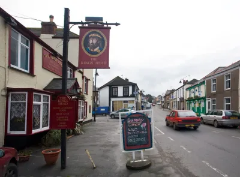

Hello, and welcome to the Tipsite.
The Tipsite is a friendly corner of the internet built on a simple idea: good advice should be quick to find, easy to understand, and genuinely useful. Instead of making visitors wade through long, rambling articles, The Tipsite gets straight to the point, offering clear and practical tips that can be put to use right away. Whether you’re looking to save a little time, learn a new trick, or solve an everyday problem, the site is designed to hand you the answer without the fuss.
What sets The Tipsite apart is its focus on helpfulness over hype. Every tip is written with the reader in mind, using plain language and a welcoming tone so that beginners and experts alike can get something out of it. The layout is clean and straightforward, making it easy to browse, pick up a handy hint in under a minute, and get on with your day. The goal is for each visit to leave you a little more capable than when you arrived.
Above all, The Tipsite is about sharing knowledge and building a community of curious, resourceful people. New tips are added regularly, so there’s always something fresh to discover, and visitors are encouraged to come back often, share their favourites with friends, and make the site part of their routine. If you’ve ever thought, “There must be a better way to do this,” The Tipsite is the place to find it.
